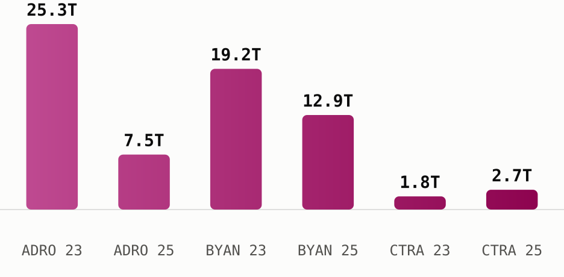

<!-- Sectors Three Stock Story - ADRO, BYAN, CTRA. Issue 13 Jul 2026, data as of 10 Jul 2026. All figures from sectors.app unless cited. -->
<div style="margin:0;padding:0;background:#f2ede4;">
<table role="presentation" width="100%" cellpadding="0" cellspacing="0" style="background:#f2ede4;padding:24px 0;">
<tr><td align="center">
<table role="presentation" width="600" cellpadding="0" cellspacing="0" style="width:600px;max-width:600px;background:#fdf7ee;border-radius:14px;overflow:hidden;font-family:-apple-system,Segoe UI,Roboto,Helvetica,Arial,sans-serif;color:#1c1c1c;">

  <!-- Header -->
  <tr><td style="padding:28px 32px 8px 32px;border-bottom:2px solid #1c1c1c;">
    <table role="presentation" width="100%"><tr>
      <td style="font-size:24px;font-weight:800;color:#1c1c1c;">Sectors Three Stock Story</td>
      <td align="right" width="110">
        
      </td>
    </tr></table>
    <div style="font-size:13px;color:#6b6b6b;padding-top:4px;">13 July 2026 &nbsp;|&nbsp; data as of 10 July 2026</div>
  </td></tr>

  <!-- Headline -->
  <tr><td style="padding:22px 32px 0 32px;">
    <div style="font-size:21px;font-weight:800;color:#1c1c1c;line-height:1.3;">Coal fortunes rebound while a property dynasty holds its nerve</div>
    <p style="font-size:14px;line-height:1.55;color:#333;margin:8px 0 0 0;">
      Alamtri Resources, Bayan Resources and Ciputra Development are each still run by
      the families that built them, and 2026 is testing that control in three different
      ways.
    </p>
  </td></tr>

  <!-- ADRO -->
  <tr><td style="padding:22px 32px 0 32px;">
    <div style="font-size:17px;font-weight:800;color:#1c1c1c;">Alamtri Resources Indonesia (<a href="https://sectors.app/idx/adro" style="color:#9E0142;text-decoration:none;">$ADRO</a>)</div>
    <p style="font-size:14px;line-height:1.55;color:#333;margin:8px 0 0 0;">
      <b>The story.</b> Alamtri Resources Indonesia traces back to a 1982 coal
      cooperation agreement in South Kalimantan, but the company most people know as
      Adaro was formed in 2004, when a consortium led by Garibaldi Thohir and Edwin
      Soeryadjaya bought the operation through a leveraged buyout financed with just
      US$50 million of equity against a US$923 million price tag (<a href="https://en.wikipedia.org/wiki/AlamTri_Resources" style="color:#9E0142;text-decoration:none;">Wikipedia</a>;
      <a href="https://www.alamtri.com/pages/read/6/14/History" style="color:#9E0142;text-decoration:none;">Alamtri, Our History</a>).
      Its 2008 IPO was Indonesia's largest ever at the time. In November 2024 the
      company dropped the Adaro name entirely for AlamTri Resources, marking its shift
      from a pure coal miner into a group that also runs an aluminium smelter
      (Wikipedia), a shift visible in this week's own filings: AlamTri just guaranteed
      up to US$100 million of a hedging facility for its aluminium subsidiary, PT
      Kalimantan Aluminum Industry (<a href="https://www.petromindo.com/news/article/alamtri-to-guarantee-up-to-100-mln-hedging-facility-for-aluminium-unit" style="color:#9E0142;text-decoration:none;">Petromindo</a>).
    </p>
    <p style="font-size:14px;line-height:1.55;color:#333;margin:10px 0 0 0;">
      <b>The people.</b> Garibaldi Thohir, the former CEO, sits as Vice President
      Commissioner and holds 6.7% of the company directly. Edwin Soeryadjaya, son of
      Astra International founder William Soeryadjaya, holds 3.6%. Both, along with T
      Permadi Rachmat and Sandiaga Uno, are flagged by sectors.app as whale investors,
      and the holding vehicle PT Adaro Strategic Investment still controls 47.8% of the
      register (sectors.app).
    </p>
    <p style="font-size:14px;line-height:1.55;color:#333;margin:10px 0 0 0;">
      <b>The numbers.</b> Earnings fell hard through the coal downturn, from IDR 25.3T
      in 2023 to IDR 7.5T in 2025, even as revenue held roughly flat around IDR 31-34T
      across the same three years. ROE for 2025 sits at 8.9%, well off the highs of the
      boom years (sectors.app).
    </p>
    <p style="font-size:14px;line-height:1.55;color:#333;margin:10px 0 0 0;">
      <b>The outlook.</b> UOB Kay Hian projects AlamTri's 2026 net profit rising 60% to
      US$719 million, citing higher metallurgical-coal prices, a roughly 500-kiloton
      increase in sales volume, the new aluminium-smelter operation and a larger
      contribution from its BPI unit (<a href="https://www.indopremier.com/ipotnews/newsDetail.php?jdl=Siapa_Pemilik_ADRO__Saham_yang_Terdepak_dari_Indeks_MSCI_Global_Standard&news_id=471525&group_news=RESEARCHNEWS&news_date=&taging_subtype=AADI&name=&search=y_general&q=Adaro+Andalan+Indonesia&halaman=1" style="color:#9E0142;text-decoration:none;">Indopremier</a>).
      Sectors.app's own consensus field points the same direction, estimating 2026 EPS
      growth of 75% off the depressed 2025 base, and the seven analysts covering the
      stock split 5 strong buy, 1 buy and 1 hold as of 7 May 2026 (sectors.app). Both
      figures are reported here as sourced consensus, not this newsletter's own view.
    </p>
  </td></tr>

  <!-- BYAN -->
  <tr><td style="padding:22px 32px 0 32px;">
    <div style="font-size:17px;font-weight:800;color:#1c1c1c;">Bayan Resources (<a href="https://sectors.app/idx/byan" style="color:#9E0142;text-decoration:none;">$BYAN</a>)</div>
    <p style="font-size:14px;line-height:1.55;color:#333;margin:8px 0 0 0;">
      <b>The story.</b> Bayan Resources was built by Low Tuck Kwong, a Singapore-born
      contractor who moved to Indonesia in 1972 and founded earthworks firm PT Jaya
      Sumpiles Indonesia the following year. He became an Indonesian citizen in 1992, a
      move that let him hold mining concessions directly under Indonesian ownership
      rules, then entered coal ownership with the 1997 acquisition of PT Gunungbayan
      Pratamacoal (<a href="https://en.wikipedia.org/wiki/Low_Tuck_Kwong" style="color:#9E0142;text-decoration:none;">Wikipedia</a>).
      ADRO and BYAN listed within four weeks of each other in 2008, ADRO on 16 July and
      BYAN on 12 August, both riding the same coal boom into the market just before
      that year's global financial crisis (sectors.app).
    </p>
    <p style="font-size:14px;line-height:1.55;color:#333;margin:10px 0 0 0;">
      <b>The people.</b> Low Tuck Kwong remains President Director and the controlling
      shareholder at 40.2%. In August 2024 he transferred a stake then worth US$6.6
      billion to his daughter Elaine Low (Wikipedia), who now holds 22.0% directly and
      appears in sectors.app's ownership data as the second-largest shareholder and a
      whale investor alongside her father. Forbes ranked Low Indonesia's third-richest
      person in 2024, with a net worth of US$27 billion.
    </p>
    <p style="font-size:14px;line-height:1.55;color:#333;margin:10px 0 0 0;">
      <b>The numbers.</b> Bayan's revenue kept climbing, from IDR 55.3T in 2023 to IDR
      57.4T in 2025, but earnings moved the other way, down 32.8% to IDR 12.9T over the
      same stretch as cost of revenue rose faster than sales (sectors.app). ROE for
      2025 is 28.5%, the highest of the three names here, on a net profit margin of
      22.4%.
    </p>
    <p style="font-size:14px;line-height:1.55;color:#333;margin:10px 0 0 0;">
      <b>The outlook.</b> Sectors.app carries no analyst rating breakdown or company
      growth forecast for Bayan this run, both fields return null, so no consensus
      figure is reported here rather than guessed at.
    </p>
  </td></tr>

  <!-- CTRA -->
  <tr><td style="padding:22px 32px 0 32px;">
    <div style="font-size:17px;font-weight:800;color:#1c1c1c;">Ciputra Development (<a href="https://sectors.app/idx/ctra" style="color:#9E0142;text-decoration:none;">$CTRA</a>)</div>
    <p style="font-size:14px;line-height:1.55;color:#333;margin:8px 0 0 0;">
      <b>The story.</b> Ciputra Development was founded on 22 October 1981 by the
      architect and developer born Tjie Tjin Hoan, who at 25 adopted the single name
      Ciputra, combining his Chinese surname Tjie with the Indonesian word for son,
      putra (<a href="https://en.wikipedia.org/wiki/Ciputra" style="color:#9E0142;text-decoration:none;">Wikipedia</a>).
      The company was renamed Ciputra Development in 1990 and listed on the Jakarta
      Stock Exchange in 1994, by far the oldest listing of the three names in this
      issue (sectors.app). Ciputra died in 2019, but the group he built has since
      developed more than 76 projects across 33 Indonesian cities.
    </p>
    <p style="font-size:14px;line-height:1.55;color:#333;margin:10px 0 0 0;">
      <b>The people.</b> His son Candra Ciputra now serves as President Director, and
      the family holding vehicle PT Sang Pelopor still controls 53.3% of the company
      (sectors.app). The most notable recent ownership move belongs to an outside
      investor rather than the family: Morgan Stanley disclosed to the OJK on 7 July
      2026 that it had lifted its stake to 18.40%, buying 3 billion shares on 2 July
      2026 at prices between Rp 555 and Rp 570 (<a href="https://www.cnbcindonesia.com/market/20260707164934-17-748878/morgan-stanley-borong-saham-emiten-ciputra--ctra--di-harga-rp560" style="color:#9E0142;text-decoration:none;">CNBC Indonesia</a>,
      7 Jul 2026), the same week CTRA shares rose 5.81% to Rp 565.
    </p>
    <p style="font-size:14px;line-height:1.55;color:#333;margin:10px 0 0 0;">
      <b>The numbers.</b> Unlike the two coal names, Ciputra's recent trend has been
      improving: revenue rose from IDR 9.2T in 2023 to IDR 12.6T in 2025, and earnings
      grew 44.3% over the same period, from IDR 1.8T to IDR 2.7T (sectors.app). ROE for
      2025 stands at 9.9%, on a net profit margin of 21.1%.
    </p>
    <p style="font-size:14px;line-height:1.55;color:#333;margin:10px 0 0 0;">
      <b>The outlook.</b> That improving trend is not what the company itself expects
      for 2026. Management's own marketing sales target for the year is IDR 9.5
      trillion, and it has told investors the property market in several regions is
      "still sluggish," with weak consumer purchasing power and higher financing costs
      slowing new launches (<a href="https://investasi.kontan.co.id/news/strategi-ciputra-development-ctra-bidik-marketing-sales-rp-95-triliun-di-2026" style="color:#9E0142;text-decoration:none;">Kontan</a>;
      <a href="https://investasi.kontan.co.id/news/ciputra-development-ctra-proyeksikan-laba-turun-10-pada-2026" style="color:#9E0142;text-decoration:none;">Kontan</a>).
      Sectors.app's consensus field agrees directionally, estimating 2026 EPS growth of
      negative 14.3% and revenue growth of negative 11.1% off the 2025 base. The six
      analysts covering the stock are still positioned 5 strong buy and 1 hold as of 7
      May 2026, a rating last updated before the more recent guidance, reported here as
      sourced consensus rather than this newsletter's own view (sectors.app). To meet
      its target despite the headwinds, CTRA has launched two new residential projects
      this year, Citra Homes Halim in Jakarta and Citra Bukit Golf Sentul in Bogor
      (Kontan).
    </p>
  </td></tr>

  <!-- Closing chart + line -->
  <tr><td style="padding:22px 32px 0 32px;">
    <div style="padding:4px 0 4px 0;">
      
    </div>
    <p style="font-size:12px;font-style:italic;line-height:1.5;color:#6b6b6b;margin:6px 0 0 0;">
      Two coal earnings streams roughly halved while Ciputra's grew, the same divergence the outlook sections above describe from the other direction (sectors.app).
    </p>
    <p style="font-size:14px;line-height:1.55;color:#333;margin:14px 0 0 0;">
      Three founders, three different points in the cycle: two coal families riding a
      rebound they built the balance sheet to survive, and a third generation defending
      a target it has already told the market it may not fully reach.
    </p>
  </td></tr>

  <!-- CTA -->
  <tr><td style="padding:26px 32px 4px 32px;" align="center">
    <a href="https://sectors.app" style="display:inline-block;background:#9E0142;color:#ffffff;font-size:14px;font-weight:700;text-decoration:none;padding:12px 28px;border-radius:8px;">Open these companies' reports on Sectors</a>
  </td></tr>

  <!-- Upcoming event -->
  <tr><td style="padding:22px 32px 0 32px;">
    <div style="font-size:17px;font-weight:800;color:#1c1c1c;padding-bottom:10px;">Upcoming Events</div>
    <table role="presentation" width="100%" cellpadding="0" cellspacing="0" style="background:#fbe9d8;border-radius:10px;overflow:hidden;"><tr><td>
      
      <div style="padding:16px 18px 0 18px;font-size:15px;font-weight:800;color:#1c1c1c;">Automated IDX Stock Intelligence with n8n and Sectors API</div>
      <p style="padding:0 18px;font-size:13px;line-height:1.6;color:#333;margin:8px 0 0 0;">A hands-on exploration of workflow automation for Indonesian capital markets, from connecting live IDX data via Sectors API to building low-code intelligence pipelines and automated stock monitoring systems with n8n.</p>
      <div style="padding:10px 18px 0 18px;font-size:12.5px;line-height:1.8;color:#6b6b6b;">
        <b>Date:</b> 27th and 28th July, 2026<br>
        <b>Time:</b> 18.30 &ndash; 21.00 (GMT+7)<br>
        <b>Medium:</b> Zoom Conferencing (Online)<br>
        <b>Language:</b> Indonesian (by Alya Dwinanda)<br>
        <b>Intended Audience:</b> Analysts, investors, and automation-curious professionals working with Indonesian capital markets
      </div>
      <div style="padding:16px 18px 18px 18px;">
        <a href="https://supertype.ai/events/n8n" style="display:inline-block;background:#9E0142;color:#ffffff;font-size:13px;font-weight:800;text-decoration:none;padding:11px 26px;border-radius:8px;">Register here</a>
      </div>
    </td></tr></table>
    <table role="presentation" width="100%" cellpadding="0" cellspacing="0" style="background:#fbe9d8;border-radius:10px;overflow:hidden;margin-top:14px;"><tr><td>
      
      <div style="padding:16px 18px 0 18px;font-size:15px;font-weight:800;color:#1c1c1c;">Hermes Agent x Sectors Community Meetup: Build a Financial AI Agent That Learns and Improves</div>
      <p style="padding:0 18px;font-size:13px;line-height:1.6;color:#333;margin:8px 0 0 0;">Install Hermes Agent, connect it to live IDX and SGX market data through the Sectors skill, and watch it write its own analytical skills. A casual, hands-on community meetup in Jakarta on building a self-improving financial AI agent.</p>
      <div style="padding:10px 18px 0 18px;font-size:12.5px;line-height:1.8;color:#6b6b6b;">
        <b>Date:</b> 1st August, 2026<br>
        <b>Time:</b> 13.00 &ndash; 16.00 (GMT+7)<br>
        <b>Venue:</b> Block71, Ariobimo Sentral Building, 8th Floor, Jl. H. Rasuna Said, South Jakarta
      </div>
      <div style="padding:16px 18px 18px 18px;">
        <a href="https://supertype.ai/events/hermes" style="display:inline-block;background:#9E0142;color:#ffffff;font-size:13px;font-weight:800;text-decoration:none;padding:11px 26px;border-radius:8px;">Register here</a>
      </div>
    </td></tr></table>
  </td></tr>

  <!-- Sources -->
  <tr><td style="padding:22px 32px 0 32px;">
    <div style="font-size:13px;font-weight:800;color:#1c1c1c;padding-bottom:6px;">Sources</div>
    <p style="font-size:12px;line-height:1.6;color:#6b6b6b;margin:0;">
      <a href="https://en.wikipedia.org/wiki/AlamTri_Resources" style="color:#9E0142;text-decoration:none;">AlamTri Resources, Wikipedia</a><br>
      <a href="https://www.alamtri.com/pages/read/6/14/History" style="color:#9E0142;text-decoration:none;">Alamtri, Our History</a><br>
      <a href="https://www.petromindo.com/news/article/alamtri-to-guarantee-up-to-100-mln-hedging-facility-for-aluminium-unit" style="color:#9E0142;text-decoration:none;">Alamtri to guarantee up to $100 mln hedging facility for aluminium unit, Petromindo</a><br>
      <a href="https://www.indopremier.com/ipotnews/newsDetail.php?jdl=Siapa_Pemilik_ADRO__Saham_yang_Terdepak_dari_Indeks_MSCI_Global_Standard&news_id=471525&group_news=RESEARCHNEWS&news_date=&taging_subtype=AADI&name=&search=y_general&q=Adaro+Andalan+Indonesia&halaman=1" style="color:#9E0142;text-decoration:none;">Siapa Pemilik ADRO, Indopremier</a><br>
      <a href="https://en.wikipedia.org/wiki/Low_Tuck_Kwong" style="color:#9E0142;text-decoration:none;">Low Tuck Kwong, Wikipedia</a><br>
      <a href="https://en.wikipedia.org/wiki/Ciputra" style="color:#9E0142;text-decoration:none;">Ciputra, Wikipedia</a><br>
      <a href="https://www.cnbcindonesia.com/market/20260707164934-17-748878/morgan-stanley-borong-saham-emiten-ciputra--ctra--di-harga-rp560" style="color:#9E0142;text-decoration:none;">Morgan Stanley Borong Saham Emiten Ciputra (CTRA), CNBC Indonesia, 7 Jul 2026</a><br>
      <a href="https://investasi.kontan.co.id/news/strategi-ciputra-development-ctra-bidik-marketing-sales-rp-95-triliun-di-2026" style="color:#9E0142;text-decoration:none;">Strategi Ciputra Development (CTRA) Bidik Marketing Sales Rp 9,5 Triliun di 2026, Kontan</a><br>
      <a href="https://investasi.kontan.co.id/news/ciputra-development-ctra-proyeksikan-laba-turun-10-pada-2026" style="color:#9E0142;text-decoration:none;">Ciputra Development (CTRA) Proyeksikan Laba Turun 10% pada 2026, Kontan</a>
    </p>
  </td></tr>

  <!-- Appendix -->
  <tr><td style="padding:22px 32px 0 32px;">
    <div style="font-size:13px;font-weight:800;color:#1c1c1c;padding-bottom:6px;">Appendix: Sectors API endpoints (fields used)</div>
    <p style="font-size:12px;line-height:1.7;color:#6b6b6b;margin:0;">
      <code style="background:#f2ede4;padding:1px 4px;border-radius:3px;">companies/top-changes/?classifications=top_gainers,top_losers&amp;periods=30d</code>, <code style="background:#f2ede4;padding:1px 4px;border-radius:3px;">filings/?limit=20</code> &mdash; candidate discovery for the three picks<br>
      <code style="background:#f2ede4;padding:1px 4px;border-radius:3px;">company/report/{ADRO,BYAN,CTRA}.JK/?sections=overview,management,ownership,financials,future</code> &mdash; <code style="background:#f2ede4;padding:1px 4px;border-radius:3px;">management.key_executives[]</code>, <code style="background:#f2ede4;padding:1px 4px;border-radius:3px;">ownership.major_shareholders[]</code>/<code style="background:#f2ede4;padding:1px 4px;border-radius:3px;">whale_investors[]</code> (people section), <code style="background:#f2ede4;padding:1px 4px;border-radius:3px;">financials.historical_financials[]</code>/<code style="background:#f2ede4;padding:1px 4px;border-radius:3px;">historical_financial_ratio[]</code> (numbers table), <code style="background:#f2ede4;padding:1px 4px;border-radius:3px;">future.company_growth_forecasts[]</code>/<code style="background:#f2ede4;padding:1px 4px;border-radius:3px;">analyst_rating_breakdown</code> (attributed outlook only)
    </p>
  </td></tr>

  <!-- Footer -->
  <tr><td style="padding:18px 32px 28px 32px;border-top:1px solid #e4cdb4;margin-top:12px;">
    <p style="font-size:11px;line-height:1.5;color:#8a8a8a;margin:16px 0 0 0;">
      This newsletter is data reporting and market commentary, not investment advice or a
      recommendation to buy or sell any security. Figures are from
      <a href="https://sectors.app" style="color:#9E0142;text-decoration:none;">sectors.app</a>
      as of 10 July 2026 unless otherwise cited. Do your own research.
    </p>
    <p style="font-size:11px;color:#8a8a8a;margin:10px 0 0 0;">
      &copy; 2026 Sectors.app. All rights reserved. &nbsp;|&nbsp; Privacy Policy &nbsp;|&nbsp; Terms of Service &nbsp;|&nbsp; Unsubscribe
    </p>
  </td></tr>

</table>
</td></tr>
</table>
</div>
